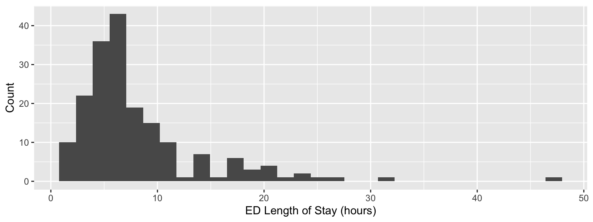

library(tidyverse)
library(rstan)
library(bayesplot)
library(knitr)
library(loo)
# load other packages as neededLive-Coding
Gamma regression for ED length of stay
Introduction
Due date
This live-coding exercise is to be completed in-class and turned in by Thursday, April 10 by 1:00 PM. To be considered on time, the following must be done by the due date:
- Final
.qmdand.pdffiles pushed to your GitHub repo - Final
.pdffile submitted on Gradescope
I will allow a 5-minute grace period, meaning assignments turned in by 1:05pm will be accepted, but nothing will be accepted after that time.
Live-Coding Session Details
- Date and Time: Thursday, April 10, 11:45 AM - 1:00 PM.
- Work Independently: You must work by yourself on this exercise. The teaching team will be available for questions.
- Resources Allowed:
- Lecture slides, homework, exercises, past exam, etc..
- Any material available online (research, textbooks, etc.).
- Restrictions:
- You cannot use AI to generate narrative or explanations during the session (you may use it for coding and technical queries only).
The goal is to complete the task independently, applying everything you’ve learned so far in the course. Good luck!
Getting started
Go to the biostat725-sp25 organization on GitHub. Click on the repo with the prefix live-coding. It contains the starter documents you need to complete the live-coding exercise.
Clone the repo and start a new project in RStudio. See the AE 01 instructions for details on cloning a repo and starting a new project in R.
Packages
The following packages are used in this assignment:
Data
This live-coding exercise will use data from the MIMIC-IV-ED Demo, similar to the data from Exam 01. To obtain an analysis data, source the R script to obtain a dataset called live_coding.
source("live-coding-process-data.R")We will use the following variables from the dataset:
los: continuous, ED length of stay in hours.race: categorical with three levels,white,black, andother.arrival: categorical with two levels that reports mode of arrival to ED,ambulance, andwalk-in.sex: binary,femaleandmale.acuity_score: categorical with three levels that reports a patient’s level of emergency,stable,complex/high-risk, andmoderate-risk.o2sat: continuous, oxygen saturation in %.
Motivation
In Exam 01, we modeled ED length of stay using quantile regression. Another approach for modeling the ED length of stay is Gamma regression.

The shape of the ED length of stay variable makes it a nice candidate for Gamma regression because it is continuous, positive, and right-skewed. In this live-coding exercise we will implement Gamma regression for ED length of stay using a log link function.
Gamma regression
Definition of Gamma Random Variable
A random variable \(Y\) with shape \(\lambda > 0\) and scale \(\theta > 0\) can be written as \(Y \sim \text{Gamma}(\lambda, \theta)\) with density \(f_Y(y | \lambda, \theta) = (\Gamma(\lambda) \theta^{\lambda})^{-1}y^{\lambda-1}\exp\{-y/\theta\}\). The mean and variance are given by: \(\mathbb{E}[Y] = \lambda\theta = \mu\) and \(\mathbb{V}(Y) = \lambda\theta^2\). One way to perform regression for a Gamma distributed random variable is to make a change-of-variables so that the density is parameterized in terms of the mean \(\mu = \lambda\theta\) and the un-transformed shape parameter \(\tau = \lambda\). The density for this transformed distribution is,
\[f_Y(y | \tau, \mu) = \frac{\exp\{-(y\tau)/\mu\}y^{\tau-1}}{(\mu/\tau)^{\tau} \Gamma(\tau)},\]
and the log density is given by,
\[\log f_Y(y | \tau, \mu) = -(y\tau)/\mu + (\tau-1)\log (y) + \tau[\log(\tau) - \log(\mu)] - \log (\Gamma(\tau)).\] To perform Gamma regression, predictors are related to the mean using a log link function, \(\log \mu_i = \alpha + \mathbf{x}_i \boldsymbol{\beta}\). Thus, the full model can be written as,
\[\begin{align*} Y_i &\stackrel{ind}{\sim} \text{Gamma}(\tau, \mu_i),\quad i = 1,\ldots,n\\ \log \mu_i &= \alpha + \mathbf{x}_i \boldsymbol{\beta},\\ \boldsymbol{\Omega} &\sim f(\boldsymbol{\Omega}), \end{align*}\]
where \(\boldsymbol{\Omega} = (\alpha,\boldsymbol{\beta},\tau)\).
Interpreting Coefficients
To interpret the coefficients, you must exponentiate them, \(\gamma_j = \exp\{\beta_j\}\). It is easy to see that \(\gamma_j\) can be interpreted as a multiplicative factor on the mean. To see this, we can consider a particular variable \(x_{ij}\) and its corresponding coefficient \(\beta_j\). Define \(\mathbf{x}_{i,-j} = (x_{i1},\ldots,x_{i(j-1)}, x_{i(j+1)}, \ldots, x_{ip})\) and \(\boldsymbol{\beta}_{-j} = (\beta_{1},\ldots,\beta_{j-1}, \beta_{j+1}, \ldots, \beta_{p})^\top\) as objects that have removed the \(j\)-th entry. Now assume that we observe two observations \(\mathbf{x}_i\) and \(\mathbf{x}_{i'}\), such that the only difference between the two are that \(x_{i'j} = x_{ij} + 1\). From this setup, we can see that indeed the \(\gamma_j\) can be interpreted as being multiplicative on the mean, \[\begin{align*} \mu_{i'} &= \exp\{\alpha +\mathbf{x}_{i'}\boldsymbol{\beta}\}\\ &= \exp\left\{\alpha +\mathbf{x}_{i',-j} \boldsymbol{\beta}_{-j} + x_{i'j} \beta_j\right\}\\ &= \exp\left\{\alpha +\mathbf{x}_{i,-j} \boldsymbol{\beta}_{-j} + (x_{ij} + 1) \beta_j\right\}\\ &= \exp\left\{\alpha +\mathbf{x}_{i,-j} \boldsymbol{\beta}_{-j} + x_{ij} \beta_j + \beta_j\right\}\\ &= \exp\left\{\alpha +\mathbf{x}_{i} \boldsymbol{\beta} + \beta_j\right\}\\ &= \exp\left\{\alpha +\mathbf{x}_{i} \boldsymbol{\beta}\right\}\exp\{\beta_j\}\\ &= \mu_i \gamma_j. \end{align*}\]
Thus, a one-unit increase in \(x_{ij}\) leads to a multiplicative increase in the mean of \(\gamma_j\).
Exercises
We are interested in fitting a Gamma regression to the ED length of stay variable, defined as \(Y_i\) for \(i = 1,\ldots,n\). We would like to fit the following model,
\[\begin{align*} Y_i &\stackrel{ind}{\sim} \text{Gamma}(\tau,\mu_i)\\ \log \mu_i &= \alpha + \mathbf{x}_i\boldsymbol{\beta}\\ &= \alpha + \beta_1 black_i + \beta_2 other_i + \beta_3 arrival\_walkin_i\\ &\quad+ \beta_4 male_i + \beta_5 acuity\_score\_moderate_i\\ &\quad+ \beta_6 acuity\_score\_complex_i + \beta_7 o2sat_i. \end{align*}\]
When you fit the model, make sure to center the predictors, such that \(\log \mu_i = \alpha^* + \mathbf{x}_i^* \boldsymbol{\beta}\), where \(\mathbf{x}_i^* = \mathbf{x}_i - \bar{\mathbf{x}}\) and \(\bar{\mathbf{x}} = \frac{1}{n}\sum_{i=1}^n \mathbf{x}_i\). Use the following priors \(\alpha^* \sim N(0,4^2)\), \(\beta_j \stackrel{ind}{\sim} N(0,1^2)\), \(j = 1,\ldots,p\) and \(\tau \sim \text{Exponential}(1).\)
Stan code
In your repo you will find a Stan script called live-coding.stan. This will act as your starter script for performing Gamma regression. Throughout Exercises 1-4 you will be prompted to add lines of code to the Stan script and in Exercises 5-8 you will use your completed Stan code.
Exercise 1
To perform Gamma regression in Stan, we need to manually encode the likelihood function. Create a function in your Stan code called gamma_regression_lpdf that encodes the log-likelihood function, \(\sum_{i=1}^n \log f_Y(Y_i|\tau,\mu_i)\). To answer this question, print the function you created using a {stan output.var = "likelihood", eval = FALSE} code chunk. The function gamma_regression_lpdf should be vectorized. Note that the function lgamma(x) computes \(\log \Gamma(x)\) in Stan.
Exercise 2
Eventually, we would like to perform posterior predictive checks for our model. In order to do this we must sample from a Gamma random variable in the generated quantities block. The only built in Stan function for sampling from Gamma random variables is gamma_rng which samples from a Gamma random variable with \(Y \sim \text{Gamma}(\lambda, \kappa)\) with density \(f_Y(y | \lambda, \kappa) = \frac{\kappa^{\lambda}}{\Gamma(\lambda)}y^{\lambda-1}\exp\{-\kappa y\}\), where \(\lambda\) is the shape parameter and \(\kappa\) is the inverse scale (or rate), such that \(\kappa = 1 / \theta\). Use the gamma_rng to create a function called gamma_regression_rng that can be used to sample the posterior predictive distribution. The function gamma_regression_rng should not be vectorized. To answer this question, print the function you created using a {stan output.var = "rng", eval = FALSE} code chunk.
Exercise 3
When performing inference we would like to inspect the posterior distribution of \(\gamma_j\) for \(j = 1,\ldots,p\). Define this parameter in your generated quantities code chunk. To answer this question, print the Stan code used to define this new parameter using a {stan output.var = "gamma", eval = FALSE} code chunk.
Exercise 4
When performing inference we would prefer to use \(\alpha\) instead of \(\alpha^*\) (recall that centering \(\mathbf{x}_i\) is for estimation efficiency). In your generated quantities code chunk define \(\alpha\) so we can easily obtain posterior summaries after fitting the model. To answer this question, print the Stan code used to define \(\alpha\) using a {stan output.var = "alpha", eval = FALSE} code chunk.
Exercise 5
Using the code from the previous exercises, fit the Gamma regression model specified above. Print the Stan code that fits the model and the convergence diagnostic plots. Make a statement about MCMC convergence for \(\alpha\), \(\boldsymbol{\beta}\), and \(\tau\).
Exercise 6
Perform a posterior predictive check to assess model fit and describe how well the model fits the data.
Exercise 7
Present posterior means and 95% intervals for \(\alpha\), \(\boldsymbol{\beta}\), and \(\tau\). One way to verify that the model has converged is to compare the results with an analogous frequentist model as a sanity check. The Gamma regression with log link function can be computed as: summary(glm(los ~ race + arrival + sex + acuity_score + o2sat, data = exam1_data, family = Gamma(link = "log"))). Are the Bayesian and frequentist results consistent?
Exercise 8
Present posterior summaries for \(\gamma_j\) for \(j=1,\ldots,p\). Provide an interpretation for \(\gamma_1\) within the context of the scientific problem.
Submission
You will submit the PDF documents for the live-coding to Gradescope as part of your final submission.
Warning
Before you wrap up the exercise, make sure all documents are updated on your GitHub repo.
Remember – you must turn in a PDF file to the Gradescope page before the submission deadline for full credit.
To submit your assignment:
Access Gradescope through the menu on the BIOSTAT 725 Canvas site.
Click on the assignment, and you’ll be prompted to submit it.
Mark the pages associated with each exercise. All of the pages of your homework should be associated with at least one question (i.e., should be “checked”).
Grading
| Component | Points |
|---|---|
| Ex 1 | 10 |
| Ex 2 | 10 |
| Ex 3 | 5 |
| Ex 4 | 5 |
| Ex 5 | 5 |
| Ex 6 | 5 |
| Ex 7 | 5 |
| Ex 8 | 5 |